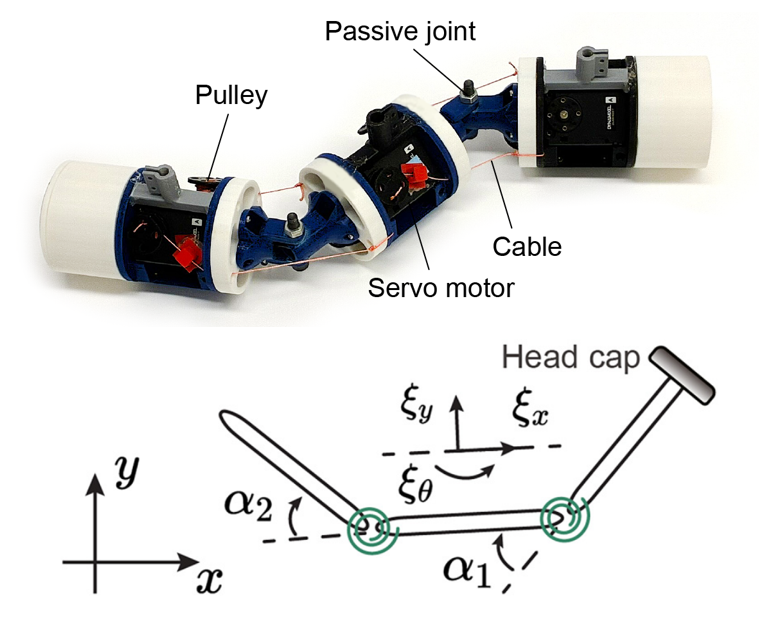
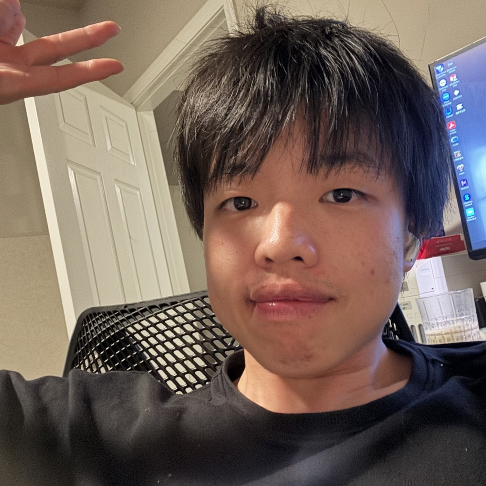
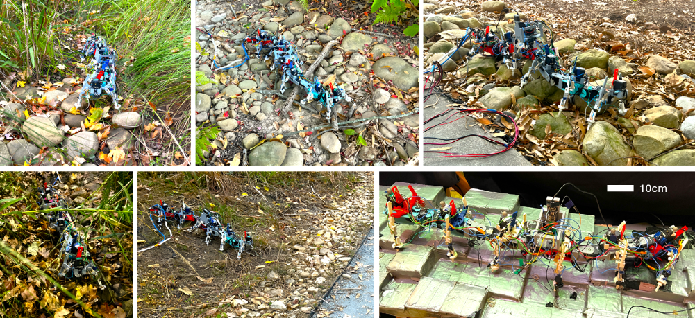
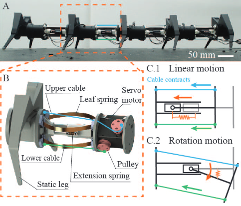
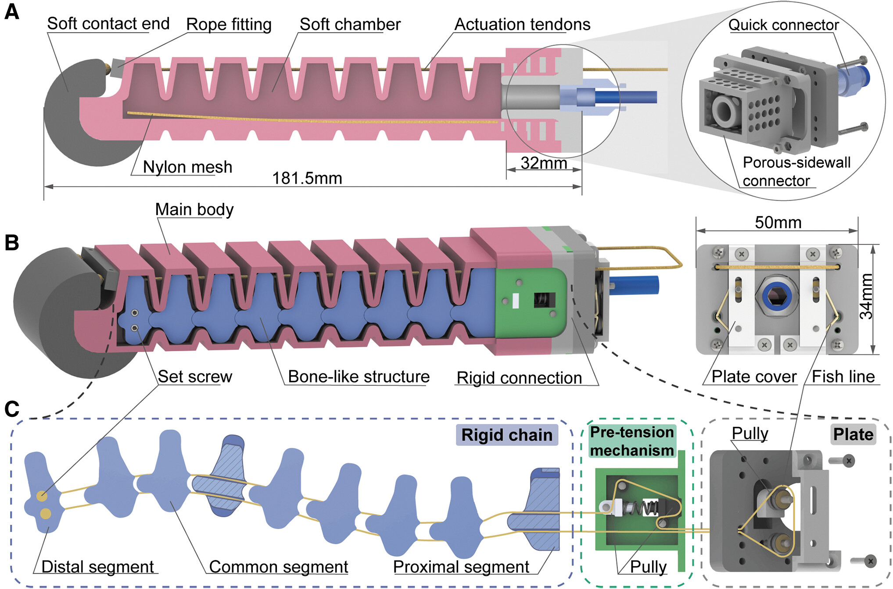
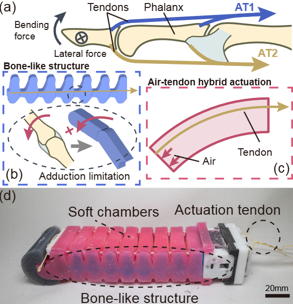

Optimal swimming with body compliance in an overdamped medium
Using geometric mechanics to control a compliant undulatory robot for efficient swimming.

PhD candidate · Georgia Tech
Biomechanics, Neuromechanics, Robophysics, Robotics
I am currently a Ph.D. candidate in Quantitative Biosciences at the Georgia Institute of Technology in Atlanta, USA, advised by Prof. Daniel I. Goldman. I received my B.Eng. in Mechanical Engineering from Wuhan University, China, in 2023.
In 2022, I was a research intern with the Dynamic Locomotion Group at the Max Planck Institute for Intelligent Systems (MPI-IS) in Stuttgart, Germany, advised by Alexander Badri-Spröwitz.
I use robots to explore fundamental questions in biomechanics and neuroscience and discover new principles for robot design and control.
† Equal contribution

Using geometric mechanics to control a compliant undulatory robot for efficient swimming.
A bird-inspired tendon mechanism enables faster and more efficient paddling transitions.

Foot-contact feedback adjusts vertical body undulation to improve multi-legged locomotion on rugged terrain.

Combining peristaltic and vertical body waves improves obstacle climbing and traversal on complex terrain.

A soft actuator combines bending and lateral stiffness control for versatile grasping.

Complex Rheology And Biomechanics Lab · Georgia Tech
Advisor: Daniel I. Goldman
Dynamic Locomotion Group · Max Planck Institute for Intelligent Systems
Advisor: Alexander Badri-Spröwitz
Exoskeleton Lab · Wuhan University
Advisor: Zhao Guo
jianf.lin@gatech.edu